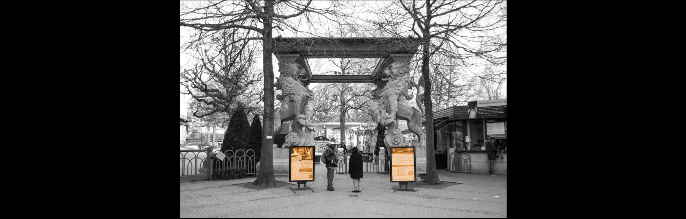
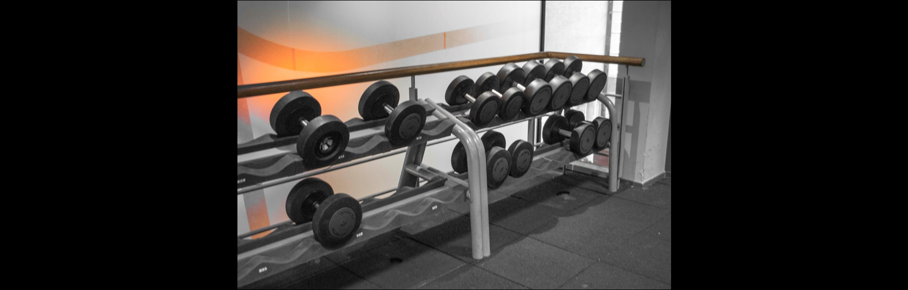
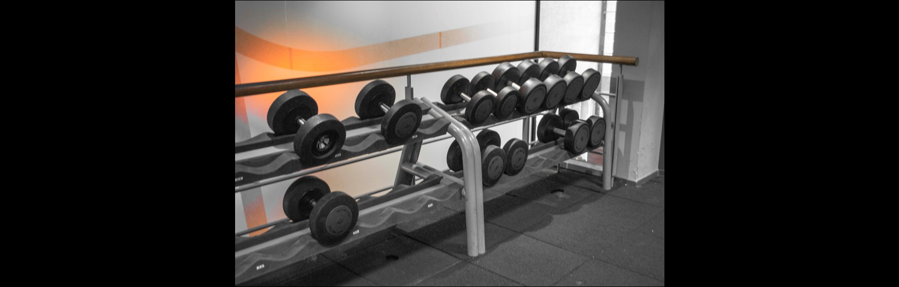
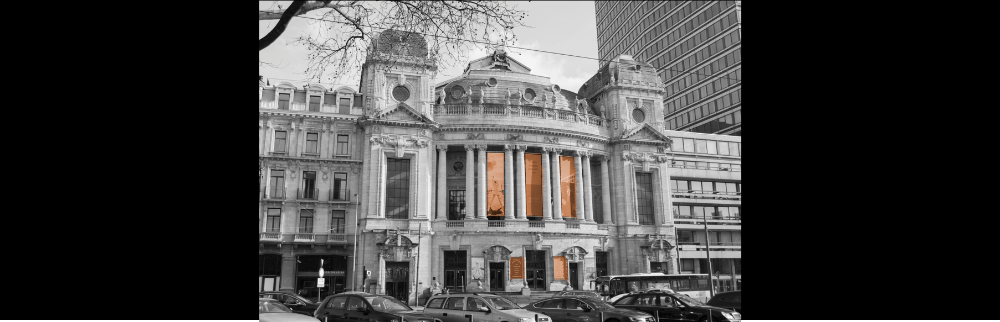
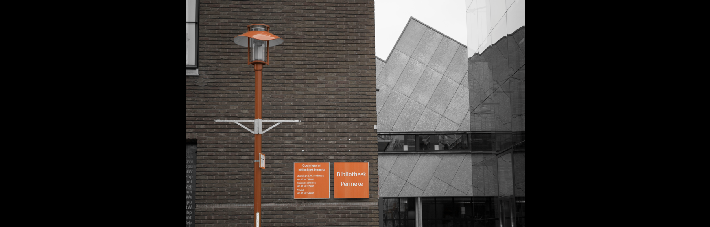

Hotspots
Sport en Cultuur
Culinair | Ontspanning | Uitgaan | Sport en Cultuur
ZOO | Koningin Astridplein 20-26, 2018 Antwerpen
In het hart van de stad ontdek je ZOO Antwerpen, de mooiste 19de eeuwse dierentuin ter wereld. Het prachtig decor behoort tot het culturele erfgoed. Honderden exotische dieren verwelkomen je : olifanten, brilberen, (zee)leeuwen, okapi’s, gorilla’s,… Tegenwoordig vinden bijna 350 soorten onderdak in de ZOO. De dierentuin werd geopend op 21 juli 1843 en is daarmee de oudste dierentuin van België en een van de oudste dierentuinen ter wereld.
Bereikbaarheid
ZOO Antwerpen is door zijn ligging zeer goed bereikbaar met het openbaar vervoer. De dierentuin ligt vlak naast station Antwerpen-Centraal, de premetrostations Astrid en Diamant en de tramhalte Centraal Station. Er zijn ook In de nabije omgeving van de ZOO verschillende parkeermogelijkheden, telkens op wandelafstand.
 

Basic Fit | Keyserlei 13, 2018 Antwerpen
Ben je op zoek naar iets actiever waarbij je ook kan werken aan je lichaam? Basic Fit is niet ver! Ga alleen of neem je vrienden of familie mee, het maakt niet uit! Basic fit biedt allerhande activiteiten voor jong en oud.
De volledig gerenoveerde fitness zorgt voor een actief en rustgevend gevoel! Ze bieden de meest moderne fitness toestellen en vrije gewichten. Er zijn gratis douches en lockers ter beschikking. Bij Basic Fit kan je onbeperkt sporten en dit in alle 125 Basic-Fit-clubs in België. Er zijn ook gratis virtuele groepslessen en indoor cycling activiteiten. Voor de liefhebbers zijn er groepslessen met live instructeur voor maar 9,99€ per maand extra! Je kan bij Basic Fit terecht vanaf 19,99 € per maand

Opera | Frankrijklei 3, 2000 Antwerpen
Op zoek naar een cultureel hoogtepunt? Een van de meest gerespecteerde toppers in Antwerpen is zeker de Opera.
De Opera heeft een toegankelijk programma. Naast klassieke en verrassend moderne opera’s biedt deze cultuurtempel ook balletvoorstellingen, concerten en jeugdevenementen aan. Alle info over lopende voorstellingen check je best even op de website.
We kunnen al wel een klein tipje van de sluier voor je oplichten over de geschiedenis van dit Kunsthuis zoals het ook wel eens genoemd wordt. De Koninklijke Vlaamse Opera (KVO) was de bijna 100 jaar oude zelfstandige Antwerpse stadsopera tot aan haar fusie in 1981 met de Koninklijke Opera in Gent. Beide stadsopera’s gingen op in de Opera voor Vlaanderen, in 1995 omgedoopt tot de Vlaamse Opera.

Bibliotheek Permeke | De Coninckplein 26, 2060 Antwerpen
Bibliotheek Permeke is de belangrijkste binnen het netwerk van openbare bibliotheken in Antwerpen. En die naam is ze waardig.
In Permeke vind je een enorm aanbod van nieuwe en klassieke media: cd’s, dvd’s, boeken, muziekpartituren… Teveel om op te noemen. Ben je naar iets specifiek op zoek? Kijk eens rustig rond in de bib of zoek het op in de catalogus. Die kun je ook online raadplegen via Mijn Bib.
Permeke heeft een cyberzone waar je à volonté kan surfen en een studiezone waar je in alle stilte kan werken. In de leeszone vind je kranten en tijdschriften om rustig door te nemen. Dus ben je op zoek naar een plek om te genieten van een boek, rustig te werken of wat op de computer rond te dwarrelen? Dan weet je nu waar je daarvoor in Antwerpen terecht kan!